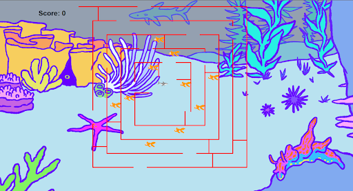

Portfolio

This is our project for 1.19. Our program is a bug stopping on a flower and the flower and bot changing color. We used loops to create the flower which Nathan and Jaethan worked on. Roxie put the colors which includes background. I went back to proofread the code so there wasn't any syntax errors.
This is our second project. Our program is a PacMan styled game and works by using arrow keys. There is a shark in the middle and fish surronding it in the maze. The goal is to eat as many fish as you can, however if you hit a wall your score restarts. We used our knowledge of making a maze to create an obstacle in the game.